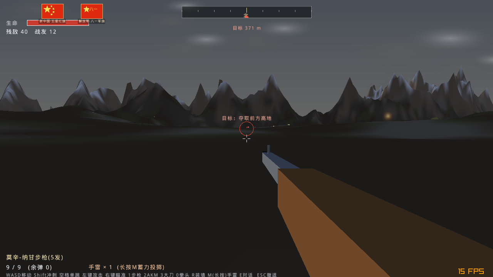
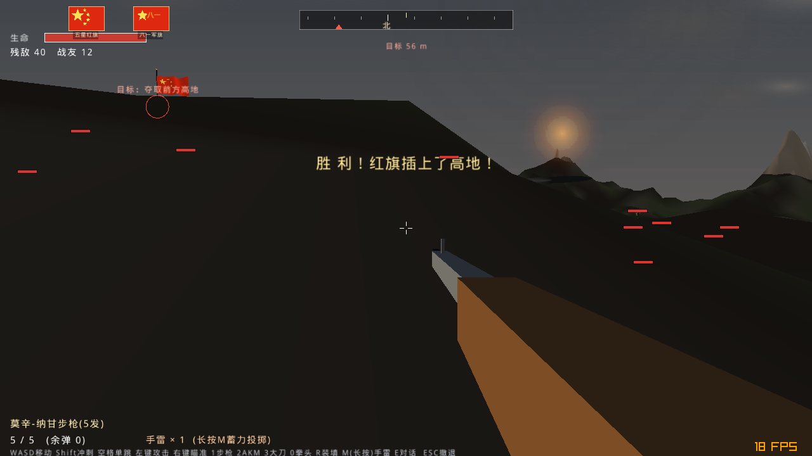

游戏画面
以下为程序实际运行截图。





空战对地支援、夺取制空权；陆战提供 21 场独立战役，与 AI 战友协同夺取高地，胜负与牺牲均有历史结语。另有浏览器网页版。
莫辛-纳甘改回贴腮机械瞄准，不再弹高倍镜；AKM 才能开镜，镜内为干净十字分划。左上角新增歼敌计数，爆头即 +1；莫辛命中头部仍一枪毙命。冲刺由 Shift 改为 Q 键（手机左摇杆推满外圈即冲刺），暂停撤退改用 Backspace，避免键位冲突。
视线检测改为沿弹道多点采样，山脊、土坡真正挡子弹；敌人需先发现目标、转身对准、首发延迟才开火，命中散布随距离明显放大，战友承伤下调、不再被瞬间融化。玩家受伤统一结算，血量钳制到 0 不再出现负数；左下角补全战友中弹牺牲播报。
登车后拥有 100 点耐久（50 车体护甲 + 50 本体生命），左上角实时显示护甲；真正开起来时沿途敌人被成片撞飞，静止时不会误杀。
原 12 场基础上新增 9 场：飞虎山、德川宁远、清川江、三所里·龙源里、突破临津江、釜谷里、雪马里、马良山、黑云吐岭。每张地图噪声地貌、山势与雪/焦土配色都不同；全部 21 场均可在联机大厅由主机任选。
所有战役天空统一改为战火熏染的烟灰色——再不是晴朗蓝天；全战线随机炮火、火光与滚滚黑烟，地面遍布焦痕弹坑。新增 220 棵程序化松树/雪杉/焦黑断木，树干为实体不可穿过。
左下角滚动击杀信息（爆头/击毙/炮火/战友），联机时也会播报战友战果。手机长按「雷」蓄力、出现抛物线，松手按弧线投出。开镜后视角移动速度加快。
左摇杆只管俯仰与方向舵，右半屏滑动控制滚转，自动巡航推力并保持不失速，贴近地面自动拉杆——新手在手机上也不会一推杆就撞山。
安卓图标改为标准五星红旗五颗星样式，五个分辨率齐全；桌面/手机进入即见红旗。
敌坦克可被集束手雷/炮弹打掉车组后按 F（手机点“话”）登车驾驶开炮；敌机定时低空扫射投弹；地面布有 16 颗地雷，炮弹有震屏与范围误伤。
旗帜为一整块连续细分网格并接入纹理光照，迎风飘扬不断条；夜战/黄昏/硝烟多套天光，脚下接触阴影。
狙击镜 15 倍、仅枪械可开镜、开镜可拖视角；子弹射线加密不穿山；AI 选最近可见目标点射；手雷可误伤自己与战友。
同 WiFi 局域网主机权威联机：看到彼此身体、同一批 40 名敌军与 12 名战友，一起冲锋夺旗；已用双真实进程端到端验证。
步枪共5发、AKM共100发，打光即空仓；狙击爆头一枪致命，腿/躯干约半血。大刀、拳头近战，每人1颗手雷蓄力抛物线投出。
敌人红条、战友蓝条；胜利时班长（牺牲则随机战友）冲上高地插五星红旗、吹冲锋号，可听伤员遗言。步兵按史实只做单跳跃进。
柏林噪声雪山森林海面、距离雾、火焰爆炸曳光粒子与程序化音效；敌机/步兵/战友均为内置状态机，安装即玩、无需联网。
以下为程序实际运行截图。


点击下方按钮直接下载最新 v2.1.5 安装文件（直链，不跳转到 Release 列表页）。
| 平台 | 动作 | 按键 / 触屏 |
|---|---|---|
| 电脑 | 陆战移动 / 视角 / 射击 | WASD / 鼠标 / 左键；右键开镜，P 暂停 |
| 空战姿态 / 油门 | 方向键与 QE / W S；空格机炮，F 导弹，B 投弹，H 返航 | |
| 切枪 / 装填 | 1、2 / R | |
| 手机 | 移动 / 视角 | 左下摇杆（上推前进）/ 右半屏拖动（带防误触死区） |
| 射击 / 瞄准 / 其它 | “火”射击、“镜”开镜、“弹”“炸”“换”，左上“暂停” |
游戏为纯 C，基于 raylib（zlib 许可）。仓库提供源码与免 gradle 的安卓出包脚本；引擎源码与各平台预编译库见完整版压缩包（Release 内）。